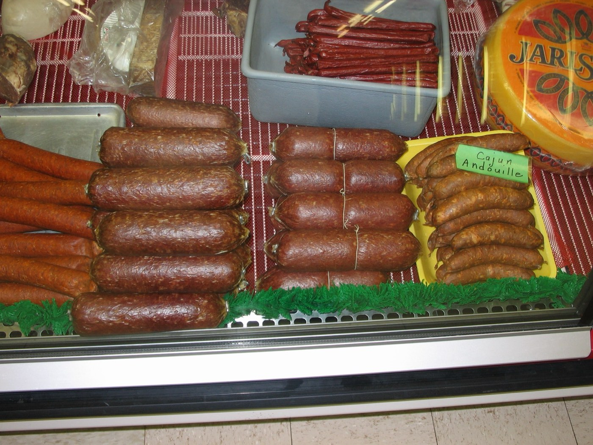
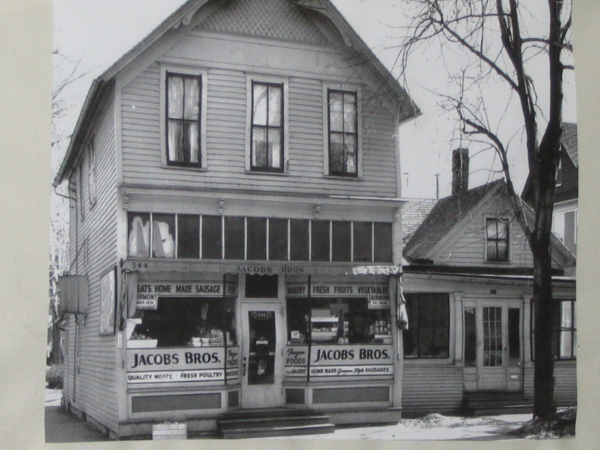
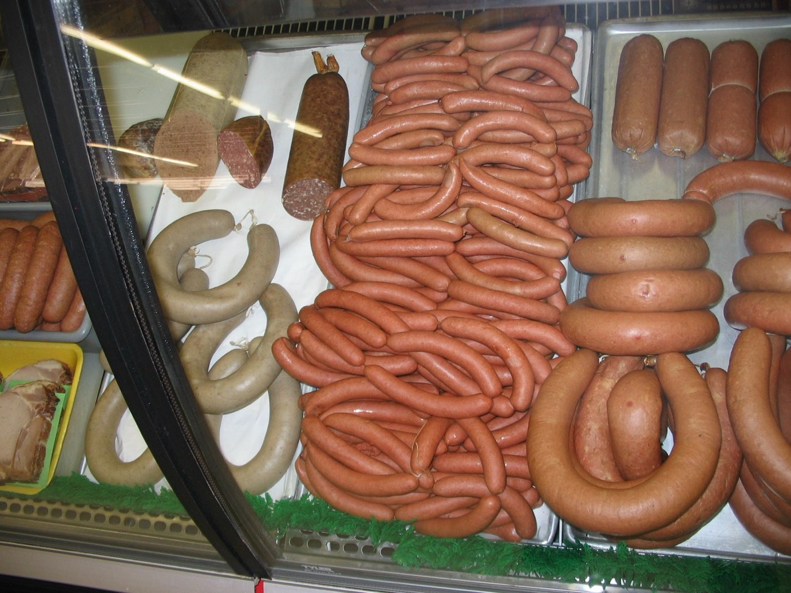
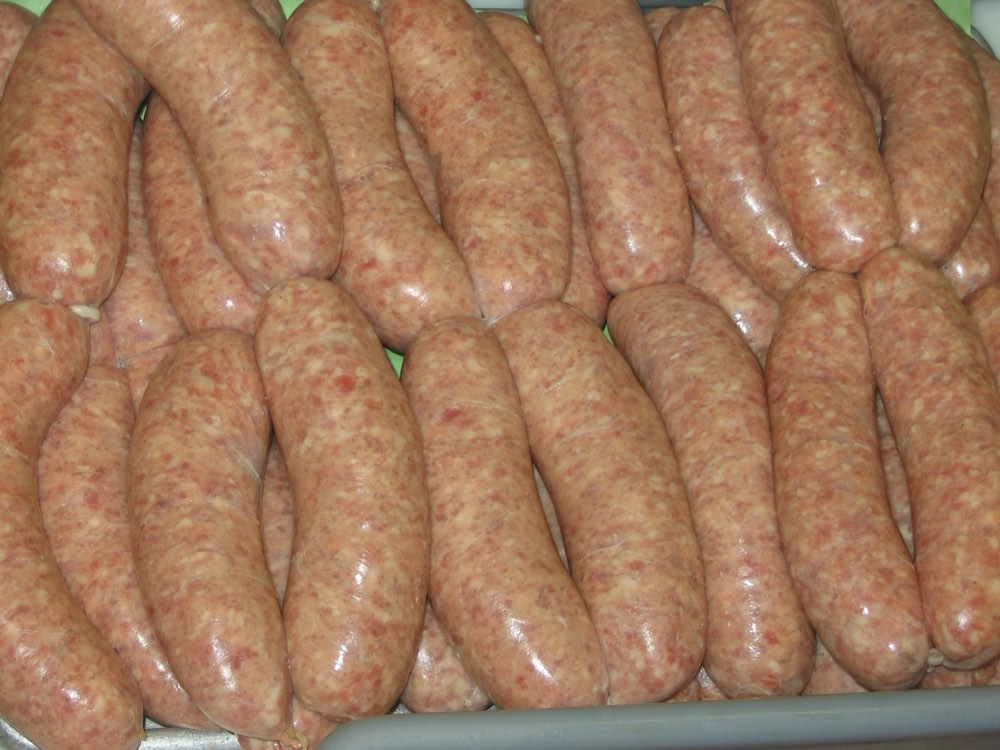
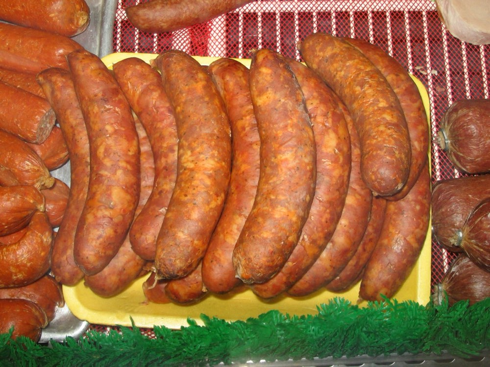
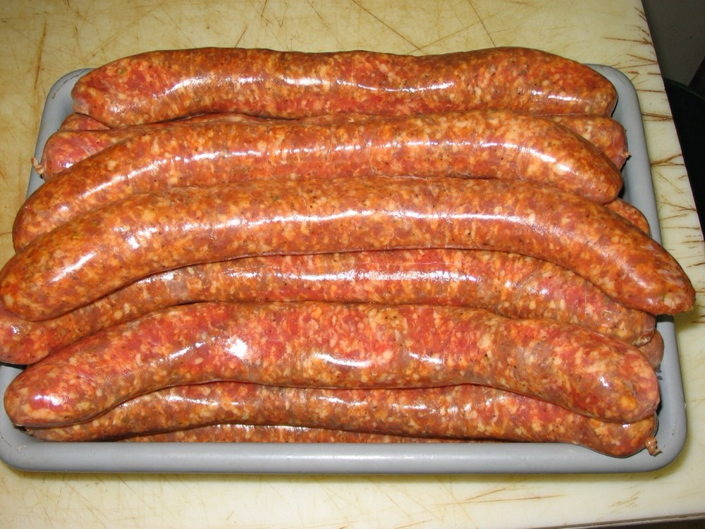
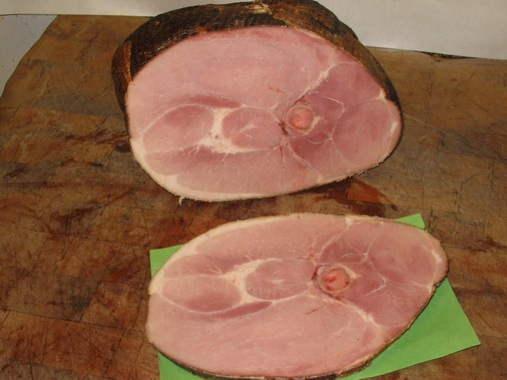
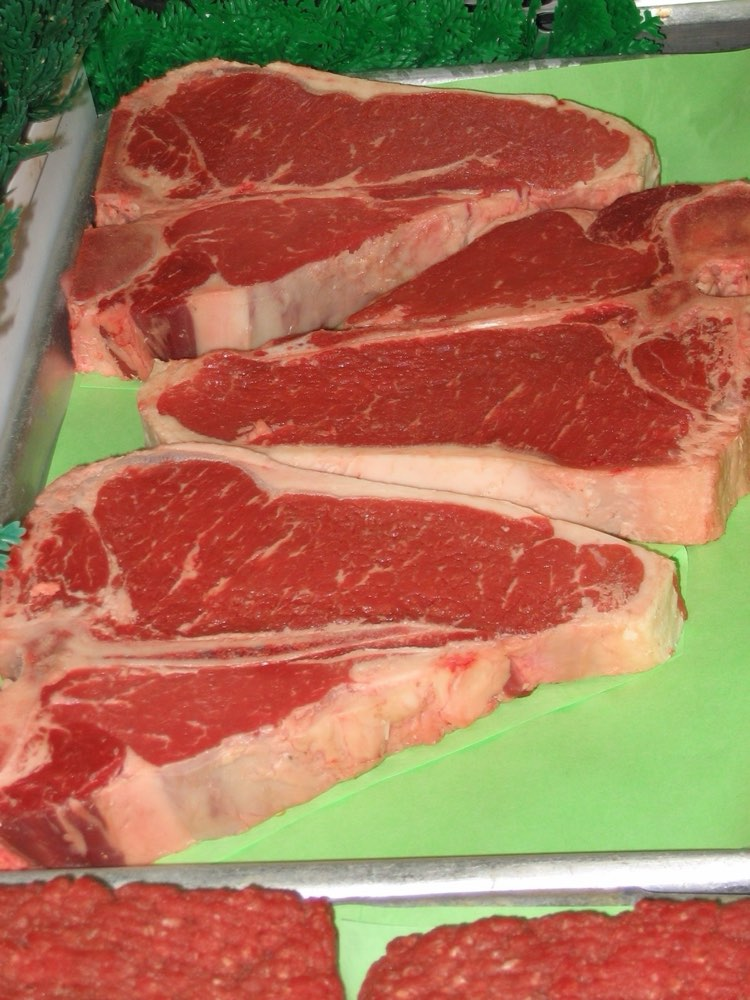
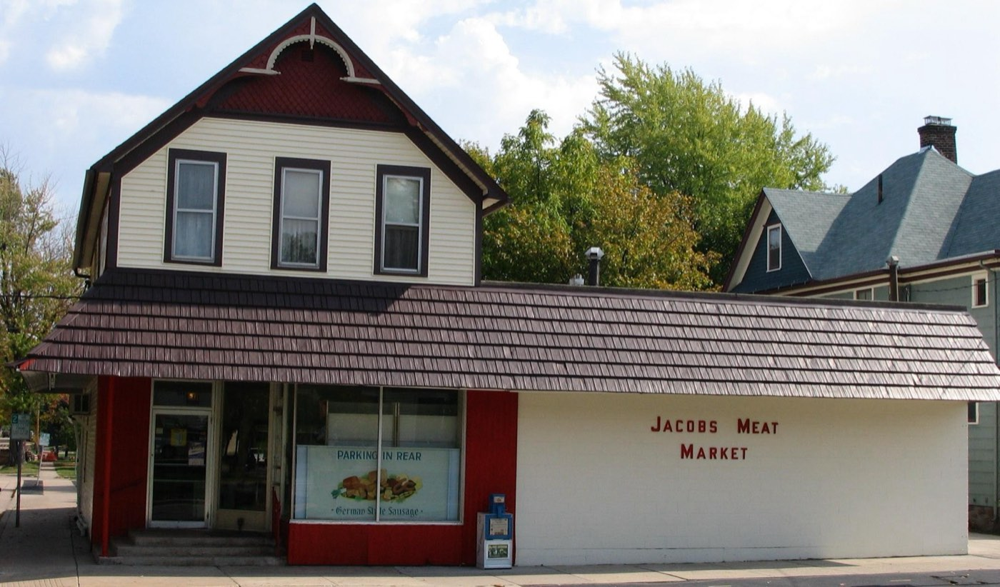

Early-week special
A Monday-and-Tuesday deal on one or two favorites, posted at the start of the week.
See the flyerA corner meat market that still runs its masonry smokehouses with real sawdust, Monday through Friday. Same German family recipes, fresh-cut USDA beef, pork, lamb and poultry, and personalized service with a joke or two thrown in.


Mon–Sat 8–6Closed Sunday
The sausages come from the family’s German-style recipes and go through masonry smokehouses fired with real sawdust every weekday.






Top quality fresh cuts of USDA beef, pork, lamb and poultry, with the kind of personal service (and jokes) you don’t find at a supermarket meat case.
“All of the beef we sell, including our Ground Chuck, is born and raised right here in the Midwest.”
New prices go up every week, lunch is hot by 11, and Wednesday mornings the counter goes live.
A Monday-and-Tuesday deal on one or two favorites, posted at the start of the week.
See the flyerThe big list: steaks, chops, Jacobs’ own sausages and deli, good Wednesday through Saturday while supplies last.
This week’s pricesA different hot plate and soup of the day every weekday, Friday walleye included. $5 delivery in Appleton, free with five or more entrees.
How lunch worksLive on Facebook and YouTube: a recap of the specials, banter, shenanigans and the weekly contest.
Watch on YouTubeJacobs started back when there was a grocery store on every corner in Appleton. Most of them are gone. Jacobs kept the corner-store feel, the German recipes and the smokehouses.
Two Jacobs brothers buy the store at the corner of Lawe and Pacific and start making German-style sausage.
The store front is remodeled in the late 1950s. Photos of both versions still hang inside the market.
New meat cases, produce cases and a freezer section, with the “old” butcher-shop feeling left exactly where it was. Luke Jacobs is the third generation to run it.
The 81st Anniversary Sale: prices of yesteryear, samples, a brat fry and a blood drive. “We’re enormously proud to still be here.”
Fresh, all-natural poultry for Thanksgiving and the holidays. Send your name, phone number, bird size and pick-up date, and it will be waiting for you.
Walk-in customers will always find options, but if you have your heart set on something particular, order ahead.

Call ahead for a gift box, or build your own and we’ll pack it in a Jacobs box. Gift cards come in any amount.
No, we don’t ship our products. Sorry! Stop in at 544 N. Lawe St., Monday through Saturday, 8 am to 6 pm.
Wednesday through Saturday, while supplies last. Most weeks there’s also a separate Monday & Tuesday special.
Email your name, phone number, bird size and pick-up date to info@JacobsMeatMarket.com, call 920.733.1031, or just stop by the shop.
Yes, boneless venison, right here on site. Every customer’s order is processed separately from all others: the meat you bring in is the meat you get back. Prices
All of the beef we sell, including our ground chuck, is born and raised in the Midwest. We’ve never purchased foreign beef, with the exception of Australian Wagyu.
Hot lunches Monday to Friday, 11 to 2, with a soup of the day. Delivery within Appleton is $5, free with five or more entrees. The menu is posted every Sunday morning.

544 N. Lawe St., Appleton, WI 54911
| Monday | 8 am – 6 pm |
| Tuesday | 8 am – 6 pm |
| Wednesday | 8 am – 6 pm |
| Thursday | 8 am – 6 pm |
| Friday | 8 am – 6 pm |
| Saturday | 8 am – 6 pm |
| Sunday | Closed |
From the north: Wisconsin Ave. to Meade St.; Meade turns into Lawe at the bend. From the south: College Ave. through downtown, then left on Lawe. We’re on the corner of Lawe and Pacific. Holiday hours change around Thanksgiving and Christmas; they’re posted with the weekly specials.